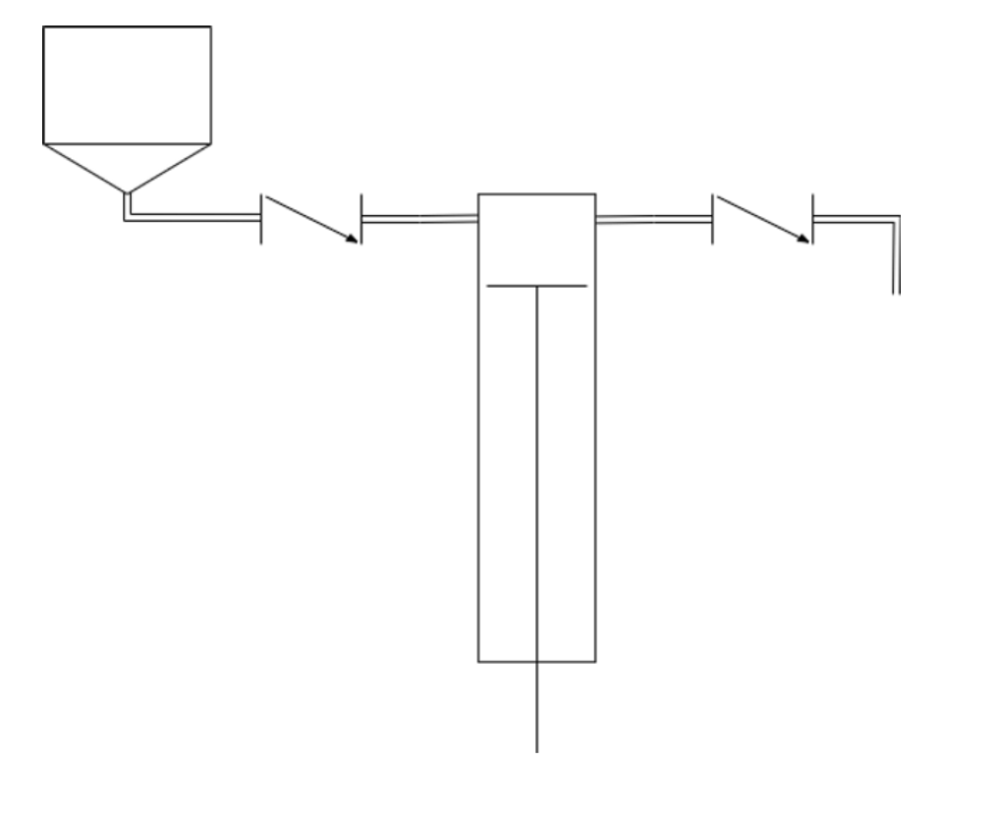
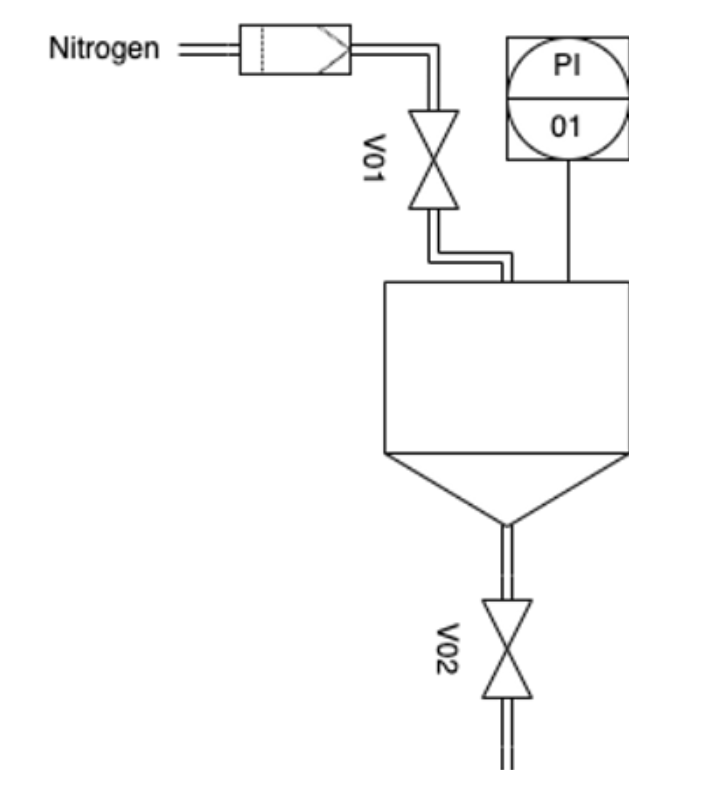
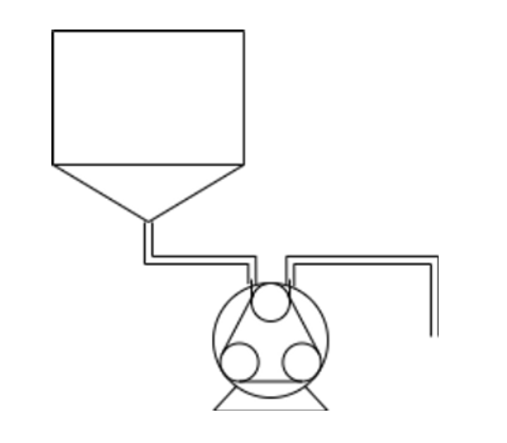

Piston Filling
In piston filling, a piston retracts drawing out a specific volume of liquid, similar to a syringe being loaded from a vial at the doctors. This piston is then pushed in forcing the dosed liquid out, this is shown below by two non return valves but in practice this is usually done mechanically by rotating to cover the inlet/outlet as required for sterility. This stroke length must be mechanically tuned to ensure correct fill volumes, once set this method is generally stable but can require precise tuning. This method allows for a wide range of product parameters to be used due to no dependency on product viscosity.
Piston filling can be adapted to work across a wide range of fill volumes from sub millimetre to litres but in most cases requires specific pistons to be made for each volume. Piston technology is almost always implemented using stainless steel but can connect into single use setups for product supply or filling needle setups to minimise CIP/SIP requirements.
Whilst pistons are generally low frothing, this can still be an issue especially at the start and end of a filling cycle due to air/nitrogen getting mixed in the piston once dosed. Piston filling generally has low feedback to the filling system meaning there is a large reliance on IPC checks and system validation to prove the system conditions are acceptable.

Time Pressure Filling
Following Hagen-Poiseuille equation, where where A is the cross sectional area of the pipe, Delta rho is the differential pressure, mu is the dynamic viscosity and L the length of pipe. The volumetric flow of a pipe can be defined by rearranging for Q leading to the below equation.
Following this principle if the physical properties of the pipework and the product being filled are known, for simplicity, the volumetric flow can be directly calculated based on the pressure the product is under and the system/product constant K. By then controlling how long this flow rate occurs (ton), the fill volume can be calculated by the below.
It’s through this process time pressure filling works, by controlling/knowing the pressure and fill time, fill volumes can be accurately met with very accurate repeatability using a setup similar to the one below where V01 is used to pressurise the vessel as controlled by PI01, PI01 is also used to measure Delta rho for the fill calculation alongside ton of V02.

For more accurate calculation, the constant K can be automatically updated through in process fill weight checks to account for changes in product viscosity.
Due to the simplicity and isolation from outside factors, this filing technique is very agile allowing for a wide range of products to be filled with simply a single parameter change whilst staying accurate and repeatable whilst also minimising product foaming as there is little product agitation. This filling technique is also format agnostic, without need for any format requirements any fill volumes, neck sizes or bottle shapes can be filled with little adjustment.
This process does however require PI01 and V02 to be tightly calibrated and maintained to ensure accurate fill weights. Due to the assumptions of the Hagen-Poiseuille equation, the process pipework must be designed properly for this application such as the surface finish of the pipes to reduce resistive losses and not overly short or long pipework, in cases where these are requirements the time pressure fill calculation must be expanded to take Bernoulli’s principle into account and as with all pharmaceutical systems, the system must undergo extensive validation in all scenarios to prove effectiveness before use due to the criticality of accuracy.
Peristaltic pump filling
A peristaltic filling process makes use of sterile single use setup rubber hosing in a peristaltic pump to dose specific quantities of liquid. A peristaltic pump is a very sterile method of filling as there is no intrusion or direct contact required due to the base principles of a peristaltic motor. A peristaltic motor works by rolling over flexible tubing similar to squeezing toothpaste out of a tube.

As the tube is squeezed through the pump a specific volume of liquid is displaced, as such a specific volume can be displaced with a specific number of rotations, due to this peristaltic pumps won’t be able to accurately fill below the minimum fill volume. For best accuracy, a peristaltic fill should be designed to not partially fill, aka if one dose of a peristaltic is 0.1ml (usually 3rd of a revolution), to fill a 3.00mL syringe requires 30 doses (10 revolutions), If instead we require 3.05mL fill this would require 30.5 doses, this half dose will not be as repeatable as the other 30 revolutions.
Although this process is relatively low foaming, this can become a problem for products prone to frothing and tubing/motors must be selected appropriately. Peristaltic filling flowrate and accuracy is defined purely by the tubing and motor selections, and as such there is a tradeoff between accuracy and fill speed. A system designed to fill 2mL vials may therefore be very slow to fill 60mL vials assuming the pump/tube combination is suitable for the differing product properties such as viscosity. With more complex peristaltic systems these issues can be overcome with variable tube sizing, rotation velocity and tube compression.